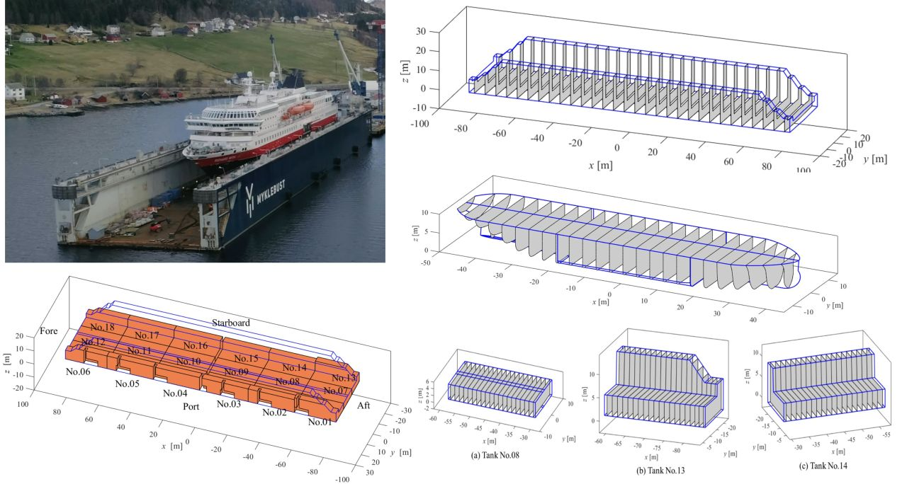

← Back to Publications Dynamic analysis of a floating dock under accidental conditions Xueliang Wen, Alejandro García Conde, Jianan Zhang, Muk Chen Ong2024  AbstractRead the original abstract on the publisher’s website ↗Read the published article ↗ Publication typeJournal articleJournalApplied Ocean ResearchVolume144Article number103908DOI10.1016/j.apor.2024.103908